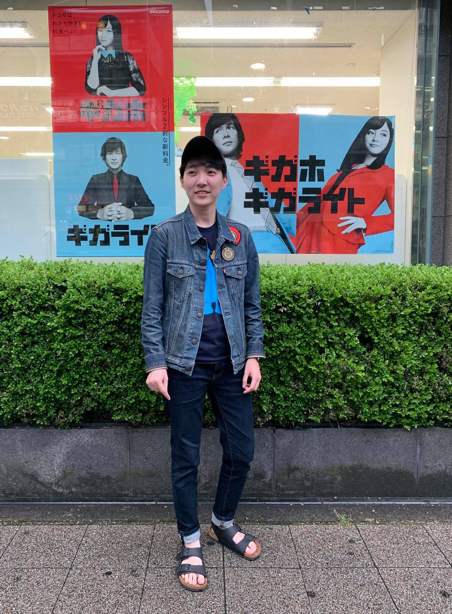

李其諭 (LEE, CHI-YU)
Higher Education
Master ,
Institute of Finance
,
National Chiao Tung University
Thesis:
The establishment of the call protection period considering the debt maturity structure: empirical analysis
Adviser: Prof.
Tian-Shyr, Dai
Talks and Presentations
Same Offering Date Callable and NonCallable spread